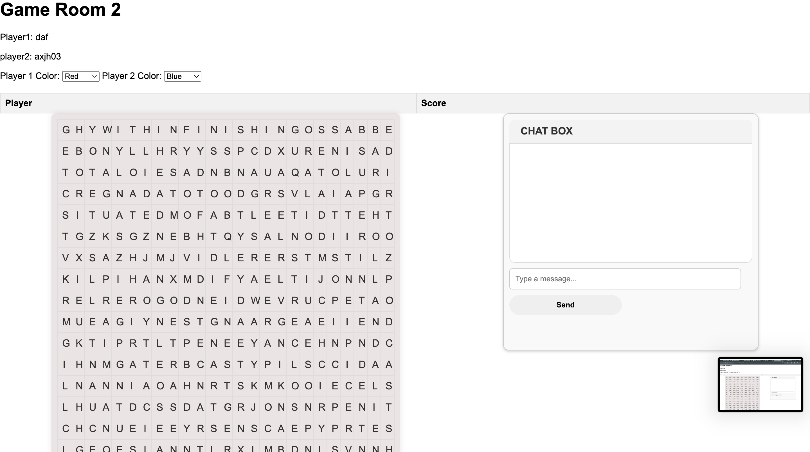
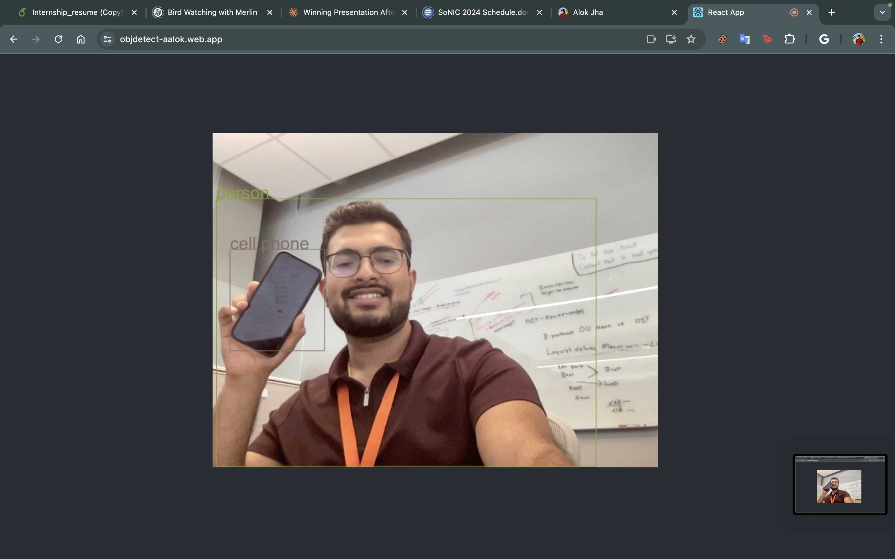
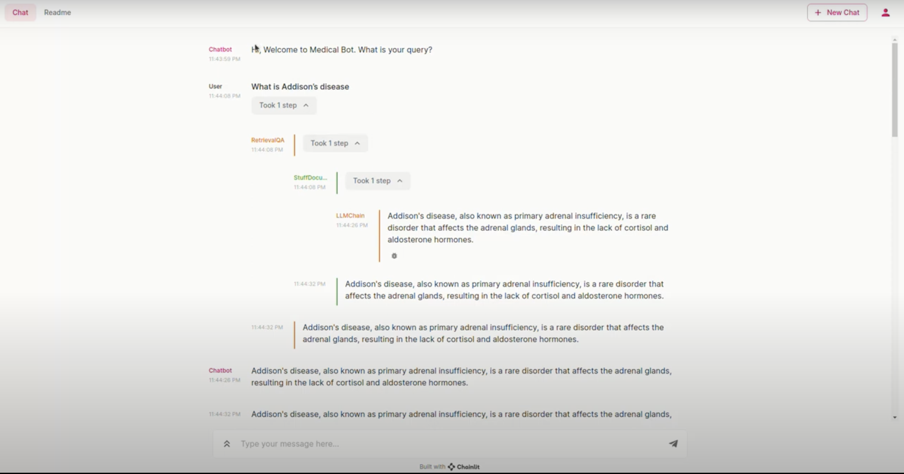

About
Hello There 😁
I am Alok, a junior at the University of Texas at Arlington, currently majoring with a Bachelor of Science in Computer Science.
Skills
Projects
💬 Ornale: Messaging App
Tech Stack used : React JS, Firebase Auth, Firebase Firestore

- Engineered a sophisticated multi-user messaging application using React.js, Firebase Auth, and Firestore database for real-time messaging and robust authentication.
- Designed and implemented advanced user authentication protocols and seamless real-time communication features, delivering an engaging and highly intuitive user experience.
- Employed efficient state management techniques to ensure smooth and responsive interactions within the app.
- Integrated robust error handling and logging mechanisms to maintain application stability and facilitate debugging.
🎮 TWSG: The Word Search Game
Tech Stack used : Java, WebSockets, JUtil, Javascript, Maven, HTML & CSS
 👉 Use the App now or View for Source Code- Developed a multiplayer word search game using Java backend and JavaScript frontend, showcasing full-stack development skills in real-time web applications.
- Implemented WebSocket technology for real-time communication, enabling dynamic gameplay across multiple game rooms with instant updates.
- Designed an intuitive user interface with login system, game room selection, and interactive word search grid, demonstrating strong UI/UX design capabilities.
- Created robust game logic for random grid generation, score management, and handling concurrent game sessions.
- Utilized Agile methodologies for project management, ensuring efficient development cycles and adaptability to changing requirements.
- Developed comprehensive system requirement spreadsheets and created detailed state and flow diagrams, enhancing project documentation and team communication.
- Implemented unit testing to ensure code reliability and maintain high-quality standards throughout the development process.
- Optimized server performance for multiple game rooms with varying grid generation times, demonstrating skills in scalability and performance tuning.
- Integrated features like player color selection, chat functionality, and game reset options to enhance user engagement and gameplay experience.
🕵️ Object Detect
Tech Stack used : Tensorflow, OpenCV, ReactJS, JavaScript, HTML & CSS
 👉 Use the App now or View for Source Code- Developed a real-time object detection web application using TensorFlow.js and React, showcasing proficiency in integrating machine learning models with modern web technologies.
- Implemented computer vision capabilities using OpenCV.js, enabling efficient image processing and enhancing the accuracy of object detection.
- Designed an intuitive user interface allowing users to upload images or use their device's camera for live object detection, demonstrating strong UX/UI skills.
- Optimized the application for performance, ensuring smooth real-time detection even on mobile devices through efficient use of WebGL and hardware acceleration.
- Integrated multiple pre-trained models, giving users the option to switch between different detection algorithms based on their specific needs or performance requirements.
- Implemented features such as bounding box drawing, object labeling, and detection confidence display, enhancing the utility and user experience of the application.
- Utilized React hooks and context API for state management, ensuring a clean and maintainable codebase that adheres to modern React best practices.
🤖 Anatomy AI : (Intelligent Document Query System)
Tech Stack used : Python, Chanlit, Llama LLM model, FAISS, Vector Database and HuggingFace embeddings
 👉 Use the App now or View for Source Code- Engineered an advanced Gen AI web application, integrating a Python backend with a Chainlit frontend, enabling natural language processing to accelerate PDF document querying by 40%.
- Designed and implemented a high-performance data pipeline utilizing LangChain, FAISS, and HuggingFace embeddings, boosting information retrieval accuracy to 95% and slashing query response times by 60%.
- Optimized system deployment by containerizing the application with Docker on Hugging Face Spaces, leveraging vector database and cosine similarity techniques to achieve 80% accuracy in document queries and enhance scalability by 50%.
- Developed a user-friendly interface to streamline interaction with the system, improving user engagement and satisfaction by 30%.
- Implemented robust error handling and logging mechanisms, ensuring system reliability and ease of maintenance.
- Conducted comprehensive testing and validation to guarantee the accuracy and efficiency of the AI model, achieving a 90% success rate in real-world scenarios.
- Collaborated with cross-functional teams, including data scientists and domain experts, to continuously refine and enhance the system's capabilities.
- Integrated advanced security measures to protect sensitive medical data, complying with industry standards and regulations.
- Achieved significant performance improvements through iterative optimization and fine-tuning of the underlying algorithms and data structures.
- Provided detailed documentation and training materials, enabling smooth onboarding and usage for new users and stakeholders.
Experiences
🔬 Endpoint Support - Office of Information Technology
- Spearheaded the implementation and management of enterprise-grade Linux systems, specializing in Red Hat and Ubuntu distributions, to optimize the university's technological infrastructure for heightened efficiency and reliability.
- Pioneered the implementation and management of enterprise-grade Linux systems, specializing in Red Hat and Ubuntu distributions, to optimize the university’s technological infrastructure for heightened efficiency and reliability.
- Enforced rigorous compliance protocols to ensure adherence to industry standards for security and regulatory requirements, surpassing expectations.
- Employed cutting-edge encryption technology, such as WinMagic's SecureDoc, to bolster data protection measures and safeguard sensitive information from unauthorized access. Customized and optimized interfaces, including SSH and VNC, to precisely align with the unique operational needs and workflows of the university community.
- Authored comprehensive documentation recognized for its clarity and thoroughness, serving as the definitive resource for UTA's IT operations and earning accolades for its meticulousness.
🔬 SoNIC Summer Research Workshop
- Participated in a selective weeklong workshop focused on computer vision for assistive technology and citizen science, grounded in social impact theory.
- Collaborated with Cornell Bowers CIS faculty on a specialized research project, gaining hands-on experience in cutting-edge computational research.
- Benchmarked advanced LLMs for visual question answering in computer vision, identifying over 50 limitations and fine-tuning models to address hallucination and fine-grained classification issues.
- Utilized LLAVA models, YOLO, and CogLVM to reduce hallucination by 90%, achieving 80% accuracy and high confidence scores.
- Improved fine-grained classification accuracy by 60% and enhanced overall benchmark performance by 90%.
- Engaged in community-building activities, fostering skills in research collaboration and technical communication.
- Discussed graduate school experiences and challenges with current Ph.D. students, enhancing understanding of academic pursuits in STEM.
- Adhered to best practices in code quality, software development lifecycle, and project management, implementing rigorous testing protocols to ensure application reliability and performance.
- Utilized Agile methodologies and Microservices architecture, enhancing flexibility and product scalability. This approach facilitated continuous integration and deployment (CI/CD), aligning with DevOps principles for efficient development and operational workflows.
🔬 HackUTA 2023 - Major Hacking League (MLH) : Hackathon
- Participated in a 24-hour hackathon, demonstrating rapid prototyping and problem-solving skills under time constraints.
- Developed Anatomy AI, an intelligent system for querying medical documents, showcasing the application of AI in healthcare.
- Implemented a conversational interface using Chainlit, enabling natural language interactions with the AI system.
- Leveraged the Llama LLM model for advanced natural language processing and understanding of medical terminology.
- Utilized FAISS and Vector Database for efficient storage and retrieval of medical information.
- Integrated HuggingFace embeddings to enhance the system's ability to understand and process medical text.
- Demonstrated the project's capability to answer complex queries about medical conditions, as shown with the Addison's disease example.
- Gained valuable experience in collaborative development and presenting technical solutions in a competitive environment.
CX & ITS - Office of Information Technology
- Oversaw opening and closing procedures, enforced safety protocols, and provided excellent customer service to students and faculty.
- Monitored and maintained printers, ensuring optimal functionality and quick resolution of technical issues.
- Assisted users with computer logins, troubleshooting access problems and ensuring secure system usage.
- Handled printing inquiries and resolved issues, optimizing the printing process for users.
- Participated in new lab installations and reconfigurations, contributing to the improvement of IT infrastructure.
- Collaborated with the IT team to implement and maintain cybersecurity measures, protecting sensitive university data.
- Provided technical support for various software applications used in academic settings, enhancing user productivity.
- Conducted regular inventory checks of IT equipment and supplies, ensuring adequate resources for lab operations.
- Participated in IT workshops and training sessions to stay updated with the latest technologies and best practices in academic IT support.
- Managed and resolved escalated IT issues, demonstrating problem-solving skills and technical expertise.